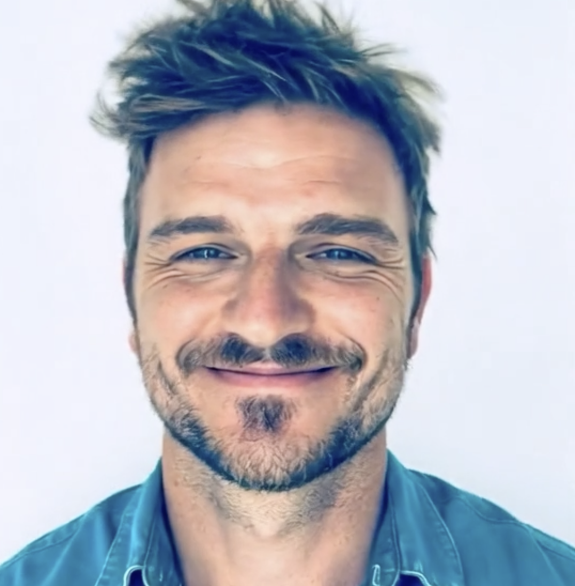

Over ons
Van nationaal eindredacteur bij Het Laatste Nieuws tot online publisher en conversion specialist voor Nieuwsblad.be. Auteur, podcastmaker, radio- en televisiegast, en nu de drijvende kracht achter The Bair Company.

Het verhaal
Ik ben Kristof Bogaerts, en ik heb twintig jaar lang geleefd van content die werkt. Niet content die er "leuk uitziet" in een presentatie. Content die mensen laat klikken, lezen, blijven, terugkomen en betalen. Als eindredacteur bij P-magazine en Ché leerde ik hoe je verhalen maakt die mensen niet meer loslaten. Als adjunct-hoofdredacteur bij P-magazine zag ik hoe redactionele kwaliteit en commerciële realiteit hand in hand gaan — of allebei ten onder.
Bij Het Laatste Nieuws, als nationaal eindredacteur, zorgde ik er dagelijks mee dat ruim 2 miljoen lezers de ideale frontpagina gepresenteerd kregen. Als multimediafanaat volgde ik voor verscheidene publicaties de techwereld op, en mocht ik als hoofdredacteur van Officieel PlayStation Magazine Benelux een trouwe, gepassioneerde community bedienen.
Maar het echte keerpunt kwam bij Nieuwsblad.be. Als online publisher en conversiemanager ontdekte ik de kracht van data achter de content. Niet alleen wát je schrijft, maar hóe je het uitspeelt. Welk kanaal. Welk moment. Welke doelgroep. Welke funnel. Dat veranderde alles.
Ik werd gespecialiseerd in het volledige digitale speelveld: conversiefunnels optimaliseren, audiences targeten, recirculatiestromen finetunen, nieuwsbrieven tweaken tot elke klik telt, paywalltunnels bouwen die subscribers omzetten in trouwe betalers, A/B-testen tot de cijfers kloppen. Pushmeldingen, social media, appdesign — ik heb het allemaal gedaan, en vooral: ik heb het allemaal gemeten.
Ik bouw geen mooie dingen die niemand ziet. Ik bouw merken die converteren — omdat ik twintig jaar lang niets anders heb gedaan dan uitzoeken wat mensen in beweging brengt.
In 2021 richtte ik samen met Ewoud Huysmans de podcast Vrolijke Vrekken op voor Nieuwsblad — financiële thema's begrijpelijk en toegankelijk maken met de nodige humor. Dat groeide uit tot een boek (Vrolijke Vrekken: Besparen was nog nooit zo leuk) en het platform Baas over je Geld. Van nul naar een trouw publiek, op elk kanaal. Als regelmatig radio- en televisiegast weet ik hoe je een verhaal vertelt dat blijft hangen, ook buiten het scherm.
Met The Bair Company ontwierp ik GiGi Money — een unieke personal finance app, from scratch gebouwd voor App Store en Play Store. Beschikbaar in 28 landen en 22 talen wereldwijd, inclusief de volledige branding errond. Van concept tot lancering, van UX tot visuele identiteit: alles uit één hand.
Vandaag bundel ik al die ervaring in The Bair Company. Geen groot bureau met lagen management. Eén persoon met twintig jaar frontlinie-ervaring, die jouw merk behandelt alsof het zijn eigen merk is. Omdat dat precies is wat ik doe.
Waar we voor staan
We leveren geen mockups met "dit kun je later aanpassen." Elk project verlaat onze studio als een afgewerkt, productie-klaar geheel. Van de eerste pixel tot de laatste interactie — alles werkt.
Jij praat met dezelfde persoon die jouw ontwerp maakt, je website bouwt en je feedback verwerkt. Geen tussenlagen, geen verloren context. Dat betekent: snellere feedback, scherpere resultaten.
Elk visueel element heeft een reden. We kiezen geen kleuren omdat ze mooi zijn, maar omdat ze het juiste gevoel oproepen. Geen decoratie — strategie die eruitziet als design.
De afstand tussen goed en uitstekend zit in de details die niemand bewust opmerkt, maar die iedereen onbewust voelt. De juiste witruimte, de perfecte animatietiming, het lettertype dat vertrouwen wekt.
Als iets niet werkt, zeggen we het. Als een idee beter kan, stellen we het voor. We zijn geen ja-knikkers maar sparringpartners. Dat levert betere resultaten op dan beleefdheid.
We bouwen geen wegwerp-websites. Elk project wordt opgezet met groei in het achterhoofd. Schaalbare systemen, onderhoudbare code en merkrichtlijnen die je jaren meegaan.
Werkwijze
Een helder, voorspelbaar traject. Zodat jij altijd weet waar je aan toe bent — en wanneer je iets kunt verwachten.
We beginnen met een vrijblijvend gesprek — telefonisch of met een koffie erbij. Wie ben je, wat doet je bedrijf, en wat wil je bereiken? Ik stel de vragen die een goed bureau stelt: wie is je doelgroep, wat maakt je anders dan de concurrentie, en wat is het gevoel dat je wilt overbrengen? Na dit gesprek weet je of de klik er is. En ik weet of ik je kan helpen.
Gratis & vrijblijvendOp basis van ons gesprek maak ik een voorstel op maat. Geen standaard pakketten, maar een plan dat precies past bij jouw situatie en budget. Je krijgt een heldere offerte met scope, tijdlijn en prijs. Geen verrassingen achteraf, geen verstopte kosten. Akkoord? Dan gaan we aan de slag.
Transparante prijzenHier begint de magie. Ik duik in je sector, bekijk concurrenten, en ontwikkel een visuele richting die past bij jouw merk. Je krijgt een designconcept gepresenteerd met uitleg over de keuzes — van kleurenpalet en typografie tot layout en tone of voice. We itereren tot het perfect is. Meestal zijn twee feedbackrondes genoeg.
Inclusief 2 revisierondesHet goedgekeurde design wordt pixel-perfect gebouwd. Je krijgt tussentijds een preview-link zodat je de voortgang live kunt volgen. Alles wordt getest op snelheid, responsiveness en browsercompatibiliteit. Ik lever pas op als ik er zelf trots op ben.
Live preview tijdens de bouwGo live! Maar daar stopt het niet. Ik begeleid de lancering, monitor de eerste weken, en sta klaar voor aanpassingen. Je krijgt ook een korte handleiding zodat je zelf kleine wijzigingen kunt doen. En als je over zes maanden een update nodig hebt? Gewoon een berichtje sturen.
Inclusief 30 dagen nazorgGereedschapskist
We kiezen tools op basis van wat het beste resultaat oplevert voor jouw project — niet wat het hipst is deze week.
Als iets werkt, láát het dan werken.
Het begint altijd met een gesprek. Vertel me over je project, je merk, je ambities — en ik vertel je eerlijk wat ik ervoor kan betekenen.
Neem contact op →